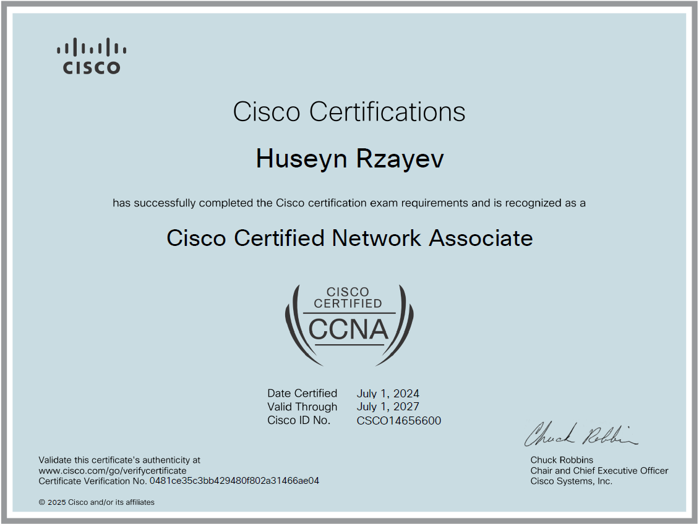

I am an IT professional with a CCNA certification and expertise in network andsystem administration. I have a stronginterest in network setup, security, and management. Enthusiastic about learning new technologies and solving complex problems.
Click on the image below to view the certificate:

Yeni başlayananlar ilk öyrənməli olduğu şey, güclü şifrə istifadəsidir. Sadə şifrələr asanlıqla sındırıla bilər. Buna görə qarışıq və unikal şifrə seçmək lazımdır. Bundan əlavə, HTTPS olan saytlardan istifadə etmək, məlumatların üçüncü şəxslər tərəfindən oğurlanmasının qarşısını alır. İki addımlı doğrulama da çox vacibdir. Məsələn, kiminsə şifrənizi tapsa belə, əlavə təsdiq olmadan hesabınıza daxil ola bilməz. Proqramları və sistemləri yeniləmək də əhəmiyyətlidir. Çünki bu yeniləmələr çox vaxt təhlükəsizlik boşluqlarını aradan qaldırır. Son olaraq, sadə bir antivirus belə, sizi bir çox təhlükələrdən qoruyur. Bu məsləhətlərə əməl etməklə, şəxsi məlumatlarımızı daha etibarlı şəkildə qoruya bilərik.